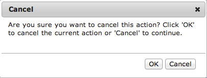

Press OK to Cancel
hi, I’m
@elyseholladay
how did we get here?
Visuals • Interactivity
Context • Flow • Language
Consistency • Speed
“That’s the designer’s job.”
“There is nothing but user experience design if you’re building products for people.”
Frances Berriman
Be a user, not a dev
interactivity, flow, & consistency
“You better appreciate your average customers when you have to struggle with a new and unfamiliar user interface.”
Jakob Nielsen
WhatsApp vs iMessage • Feedback


Google Maps • Scroll Hijacking
@drdrang Agree. I don't know how many times I've gone from a neighborhood to outer space by accident.
— Eddie Smith (@eddie_smith) May 29, 2011Instagram • optimistic design

Say that again?
language, flow, & context
“If you can go through your app and find any sentence that you’d write differently if it wasn’t generated by a computer, you are reducing the effectiveness of that text and degrading the overall experience.”
Alex Sexton
No notifications.
“Sorry, you don’t have any new notifications for this app.”
phone value cannot be blank when set to primary.
“Your primary phone number is blank. Enter your number, or set a different number to primary.”
No results found.
“We didn’t find anything that matches [query]. Try searching for something a little different.”
“You can spend as much time as you’d like on the interaction and visual design, but if your app doesn’t have a good flow, you’re leaving the most important cards on the table: the content.”
Alex Sexton
do the hard work
to make it simple
consistency & context
what is faster?
writing a new bit of code or
finding the existing code ?
.btn.btn-pr-alt.on.err { }
.button-primary-alternate.is-active.has-error { }
“Aesthetics matter; we don't want to make your eyes bleed.”
Chris Eppstein, this morning
“Code is self documenting most of the time assuming you name things properly. If you don’t, it’s a mess.”
Florian Laplantif
“First do it, then do it right, then do it better.”
Addy Osmani
don't give users unoccupied time
speed
The page with 10 results took .4 seconds
The page with 30 results took .9 seconds
after three seconds
up to 40% of users
will abandon your site
at Amazon, +100 milliseconds page load
decreased sales by 1%
Critical Path
CSS blocks rendering; load them first
JS blocks downloads; load them last
“If the page is ugly without CSS, we can live with that, but there is no page without CSS if the browser takes forever to timeout, showing us a blank white page.”
Syotan Stefanov
send less stuff •
gzip •
use CDNs to parallelize •
caching•
optimized images
“Typically the cleaner your markup ends up, the smaller your CSS will be, and the easier redesigning and editing will be in the future. It saves you not just page load time, but development time too.”
Lara Swanson, Etsy